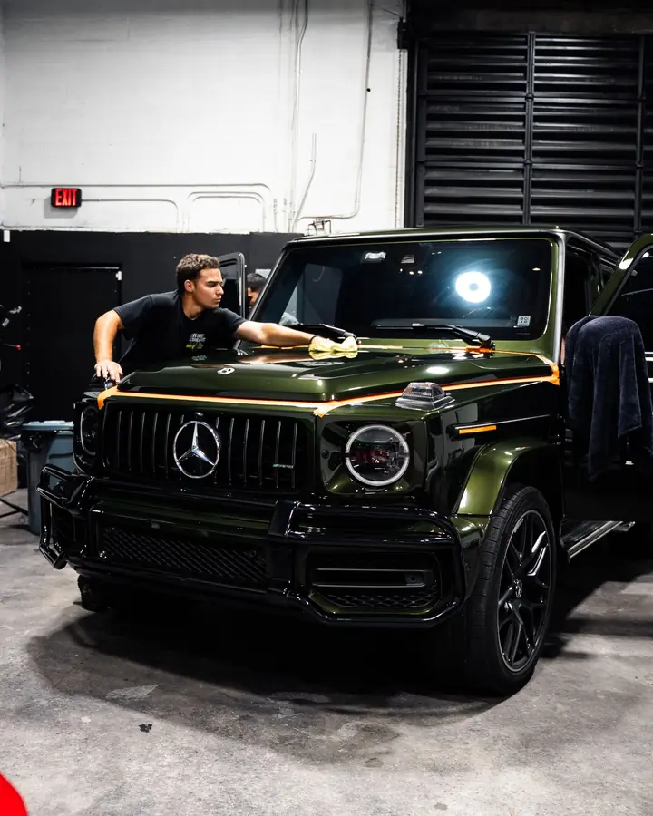
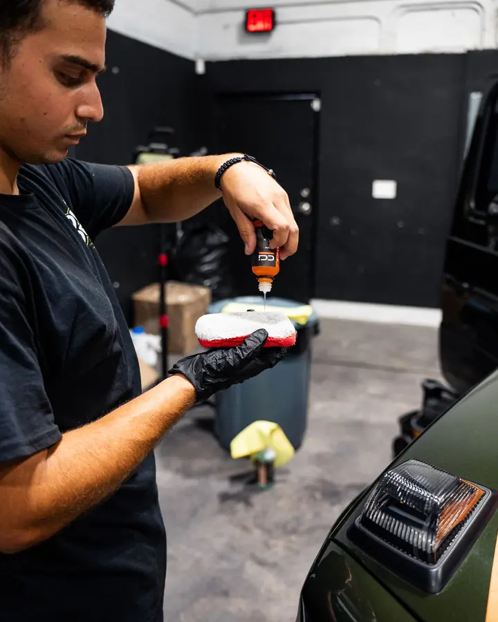
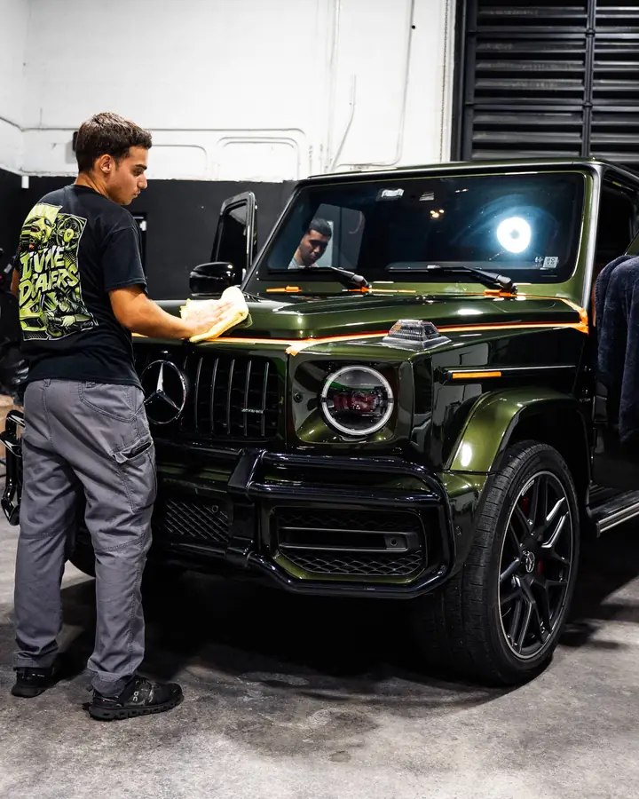
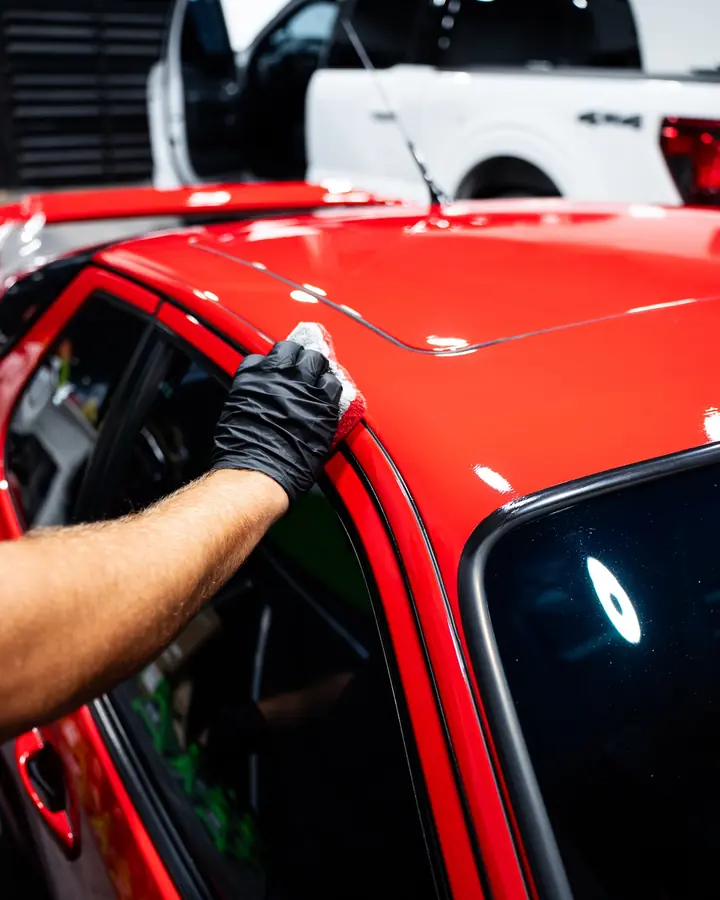
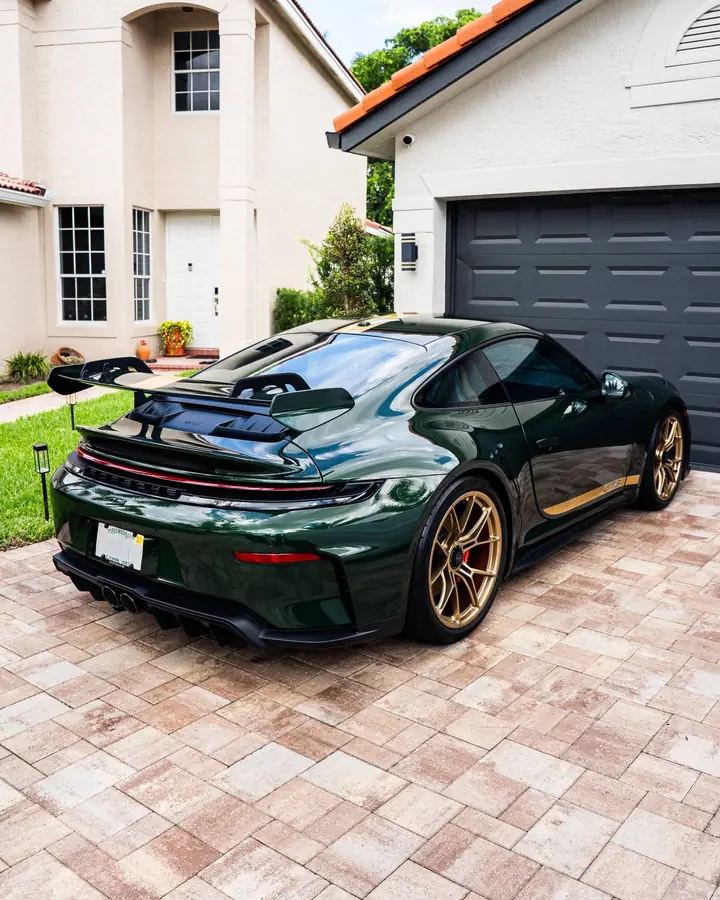
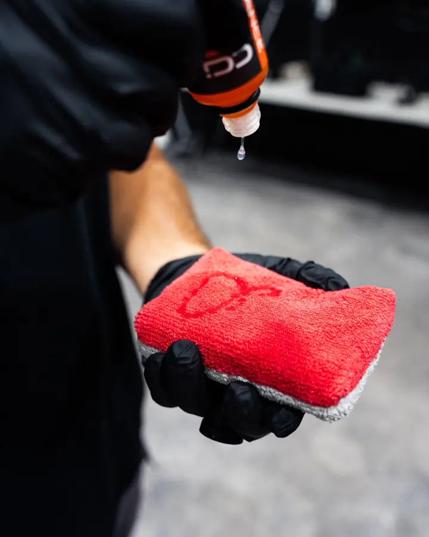

Ceramic Coating
Ceramic coating is not just about gloss. It is a long-term protective layer that keeps your vehicle looking newer, cleaner and easier to maintain.


Why get ceramic coating.
Divine Detailers provides ceramic coating installation in Miami for drivers who want lasting shine and easy exterior maintenance. The coating bonds to the paint and forms a slick surface that releases water, dirt and more during routine washing. The refined finish gives your vehicle a strong defensive layer against UV exposure and everyday buildup.
Maximum protection
Lasting UV protection
Keeping your car cleaner for longer
Long-lasting durability
Superior UV protection
Clean and vibrant longer
Hydrophobic coating
Advanced nanotechnology
Reducing stains and buildup
Glossy finish that turns heads
Enhances your vehicle’s finish
Effortlessly polished look
Professional ceramic coating for long-term protection
At Divine Detailers, we know that paint condition decides how well a coating bonds and how good the final gloss looks. Our installers carefully inspect the vehicle, prepare the surface and apply the ceramic coating for long-lasting protection built for Miami’s sun, rain and humidity.

Our ceramic coating process
In our shop, we wash, decontaminate and evaluate the paint before any coating goes on. This step removes surface buildup and gives the coating a clean foundation. Our installers then apply the coating in controlled sections to support even coverage and a smooth finish.
Surface preparation
We fully clean and decontaminate the paint to remove anything that could prevent proper bonding.
Paint correction
Swirl marks and light imperfections are polished out to create a flawless surface before coating.
Coating application
The ceramic is applied evenly in controlled sections for complete and consistent coverage.
Final inspection
We inspect the entire vehicle under professional lighting to make sure the finish is perfect.

Why ceramic coating is worth it
A ceramic coating doesn’t replace regular washing. It makes routine care easier and helps your vehicle keep a sleek look between washes. For ceramic coating installation, book an appointment with Divine Detailers in Miami. We combine careful prep and premium products with workmanship we stand behind, so you are happy with the end result.
What it protects against
Ceramic coating helps resist dirt, road grime, bird droppings, water spots and environmental fallout. This reduces staining and surface damage that normally affects unprotected paint.

How it improves appearance
The coating enhances gloss and adds noticeable depth to your paint’s color and reflections. Your vehicle keeps a freshly detailed look for much longer.

Maintenance becomes easier
Water, mud and debris have a harder time sticking to the coated surface. This makes washing faster and keeps the vehicle cleaner between washes.

How long it lasts
With proper care, ceramic coating provides long-term protection that holds up against daily driving and weather exposure. It is designed to maintain its performance and appearance for years.



Everything you wanted to know
What is ceramic coating?
Ceramic coating is a liquid polymer we apply to your vehicle's exterior. It bonds to the paint and forms a hard, slick layer that sheds water, dirt and road grime. The result is a deeper gloss, easier washing and protection from UV rays, bird droppings, bug residue and acid rain.
How long does ceramic coating last?
Most coatings last between two and five years. The exact number depends on the product, how well the car was prepped, where it is parked and how it is washed. Gentle, regular maintenance helps it last longer.
Is ceramic coating worth it?
For most owners, yes. You pay more up front, but the car stays cleaner, washes in a fraction of the time and keeps its shine. Paint that is protected and well kept also holds its resale value better.
How much does ceramic coating cost?
Price depends on the size of your vehicle, the coating you choose and how much paint correction the paint needs before coating. Send us your vehicle details through the quote form and we will give you an exact price after we inspect the paint.
How do I maintain a ceramic coating?
Wash by hand with a pH-neutral shampoo and a clean microfiber mitt. Skip harsh chemicals and automatic car washes with brushes. A maintenance spray every six to twelve months keeps the coating performing at its best.
Can you ceramic coat auto glass?
Yes. A coating on the windshield and windows makes water bead and roll off, which improves visibility in the rain. It also keeps dirt and water spots from sticking, so the glass stays easier to clean.
Can you apply ceramic coating to any car?
Almost any car, as long as the paint is sound. The surface has to be cleaned, decontaminated and polished first. Damaged or failing paint should be repaired before coating so the coating can bond properly. Matte and satin finishes can be coated too, with a product made for them and without the polishing step, since polishing would turn the finish glossy.
How does ceramic coating protect my car?
It creates a hydrophobic layer on top of your clear coat. That layer resists UV fading and oxidation, blocks chemical staining and makes it hard for dirt to stick. Light swirl marks are less likely to form during washing, so the paint looks newer for longer.
What is the difference between ceramic coating and wax?
Wax is a temporary layer that wears off in weeks or months. Ceramic coating chemically bonds to the paint and lasts years. It is harder, more water-repellent and far more resistant to chemicals and UV than any wax.
Can I apply ceramic coating myself or do I need a professional?
You can buy consumer products and do it yourself, but results are much better from a professional. The prep work is where most of the quality comes from, and a coating that is applied unevenly can leave streaks or high spots that are difficult to fix.
Does ceramic coating scratch or chip?
It adds a layer of hardness that helps resist light scratches and swirl marks, but it does not make the paint bulletproof. Hard impacts and deep abrasions can still damage both the coating and the paint beneath it.
Ceramic coating vs. PPF: which do I need?
They do different jobs. Ceramic coating adds gloss and a slick, water-repellent surface. Paint protection film (PPF) is a thick, clear urethane that absorbs rock chips and physical damage. Many owners choose both: film on the high-impact areas and ceramic coating over everything.
Do I have to remove a ceramic coating?
No, you do not have to. Over time a coating wears down. When it stops performing, it can be professionally removed or refreshed so the paint underneath is not harmed.
Can you ceramic coat matte paint?
Yes, with a coating formulated for matte finishes. A regular gloss coating can change how matte paint looks, so the right product matters. A matte-safe coating keeps the flat look while adding protection against dirt and water.
Can you ceramic coat wheels?
Yes. A coating on the wheels helps repel brake dust and road grime so they wipe clean easily. It also protects the finish from staining and light scratching.
Can you ceramic coat plastic trim?
Yes. Coating bumpers, trim and mirrors helps block UV fading and staining, and it keeps the plastic looking fresh and easier to clean.
What does the prep process look like before a ceramic coating?
Prep is the most important part of the job and takes most of the labor hours, because the coating locks in whatever is under it. We start with a full decontamination wash, then use an iron remover and a clay treatment to lift bonded contaminants. Next we correct the paint to the level it needs, from a single-stage polish to full multi-stage correction. Finally every panel is wiped with a prep solution before the coating goes on, one panel at a time. A full install usually takes one to two days.
Do I need paint correction before ceramic coating?
In most cases, yes, at least some. A coating is clear, so it does not hide swirls, water spot etching or other defects. It often makes them more visible under the added gloss. Even new cars can pick up light swirling from lot prep and washing. We inspect every vehicle and recommend the right level of correction before we quote.
What warranty comes with ceramic coating?
Coatings carry a manufacturer warranty, and we stand behind our own workmanship, including contamination trapped in the coating and application defects that affect appearance. Terms vary by coating and package, and we will spell out exactly what applies to you in your quote.
Does ceramic coating protect against rock chips?
No. A coating is only microns thick and does not absorb impact. A rock chip goes through the clear coat and sometimes the paint beneath. Paint protection film is the product that takes the hit. For complete protection, we recommend PPF on high-impact areas and ceramic coating over the whole vehicle.
Can I put ceramic coating over PPF?
Yes, and we recommend it. A coating makes the film slicker and more water-repellent, so it washes easier and resists water spots and bonded contaminants. It does not change the film's impact protection or its self-healing properties.
Should I do PPF or ceramic coating first?
Film first, then coating. The film goes on the high-impact areas, such as the front bumper, hood, fenders and rocker panels. The coating then goes over the exposed paint and on top of most modern films. Putting film over an existing coating can reduce adhesion, so if your car is already coated we will inspect it and suggest the safest approach.
Will ceramic coating protect against storm damage or road debris?
Not from impact. Coating gives you a slick, chemical-resistant surface that handles salty air, hard-water residue, bug splatter and road grime. It cannot absorb hail, flying debris or gravel. If impact is the concern, paint protection film is the right tool, with ceramic coating on top for easier maintenance in Miami's heat and humidity.
How do I know if my coating needs to be reapplied or just decontaminated?
If water stopped beading, the cause is often bonded contamination on top of the coating, not failure of the coating itself. A proper decontamination with iron remover, clay and a coating-safe cleaner can bring the performance back. True failure shows up as rough paint after decontamination, thin spots or uneven gloss, or a coating that is several years old on a car parked outdoors. If you are not sure, bring it in and we will take a look.
We don’t just detail cars, we perfect them.
Reach out and let’s talk about what your car needs next.
Contact us